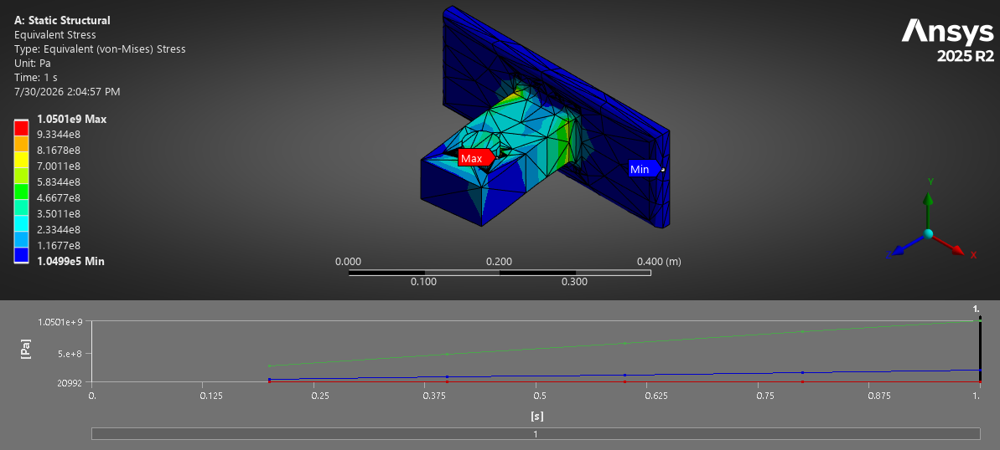

PRJ-08

Mechanical / StructuresDocumented
AeroFrame-DT: Pylon Attachment Trade Study
Parametric CAD · lug hand calculations · nonlinear solid FEA
Engineering question
Which geometry variable controls a forward pylon attachment fitting, and how should the decision change when the governing failure mode changes?
Outcome
A five-variant e/D study located the mode crossover near 1.35, correlated elastic response within 1.7%, and retained the unresolved plastic-strain inconsistency visibly.
529.7 kN
Load envelope
5
Geometry variants
1.7%
Scaling deviation
10
Frozen variables
ANSYS MechanicalParametric CADLug analysisAPDLGD&T